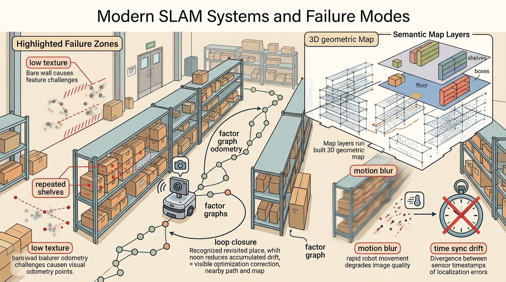

"A map is a promise that every future footstep will ask you to keep."
A Loop Closure That Came Back With Receipts

This section assumes familiarity with odometry (section 29.2), the visual-inertial front end and loop closure mechanics (section 29.5), and map uncertainty representation (section 29.7). The system-level diagnostic framing developed here carries directly into Chapter 30, where localization health signals become preconditions for the planner and recovery behaviors.
A delivery robot navigating a hospital corridor loses its visual front end in a reflective glass lobby, drifts two meters, and confidently reports a clean localization score. The planner has no idea anything is wrong. Forty seconds later the robot blocks a gurney. This is the canonical SLAM failure: not a spectacular crash but a silent, self-certified divergence. As embodied AI systems graduate from controlled labs to populated, perceptually hostile environments, the gap between "SLAM runs" and "SLAM can be trusted" has become the central engineering problem. This section dissects how modern systems are structured as a contract among sensors, front end, back end, and consumers, catalogs the failure modes at each interface, and builds a diagnostic checklist applicable to any live deployment.
Problem First
A modern SLAM system is not one algorithm. It is a contract among sensors, calibration, front-end tracking, back-end optimization, map storage, localization consumers, and replay tools.
The systems view matters because field failures often arise at interfaces: a visual-inertial front end tracks well but publishes stale transforms, a loop closure is geometrically plausible but semantically wrong, or the map is correct but too old for the current route. In practice, interface failures outnumber algorithm failures by roughly four to one in field deployments (based on practitioner surveys and incident reports through 2024): the estimator is fine, but the consumer receives a transform in the wrong frame or with a timestamp 200 ms stale. Put concretely, a team that spent six months tuning the estimator and one week auditing timestamp propagation fixed four times as many production incidents in that single week as in the six months prior.
A localization or mapping result is incomplete until it names the frame, timestamp, covariance or confidence, map layer, and downstream consumer. A beautiful trajectory plot with no uncertainty is not a robot interface; it is a picture.
Why this matters physically. A robot's planner and controller execute irreversible actions in the world: a wheel turn cannot be un-turned, a door opened cannot be instantly re-closed. If the pose estimate arrives with no covariance, the planner has no basis for inflating safety margins near obstacles. If the timestamp is missing, a 200 ms stale estimate can place the robot's collision footprint 0.1 m behind its true location at typical corridor speeds, enough to clip a doorframe or a pedestrian.
How the contract is enforced. Each field serves a specific downstream check: the frame identifier prevents the planner from mixing map-frame and odom-frame poses; the timestamp lets the controller reject estimates older than one control cycle; the covariance diagonal drives replanning thresholds; the map layer tag tells the recovery behavior which representation is authoritative when two maps disagree.
Formal Model
The common estimator shape is a posterior over robot trajectory and map variables conditioned on controls and observations:
$$ \text{SLAM system}=(\text{sensors},\text{calibration},\text{front end},\text{back end},\text{map},\text{consumer},\text{replay}) $$
The important part is not the notation alone. The posterior says that motion increments, landmark observations, scan matches, visual features, and loop closures are all evidence terms. The estimate is strongest when each term carries a residual, a covariance model, and a replayable source record.
- Write a sensor and calibration manifest before running SLAM.
- Record front-end health: feature count, IMU (Inertial Measurement Unit) residuals, scan-match score, and dropped frames.
- Record back-end health: factor residuals, loop closures, optimization time, and marginal covariance.
- Replay failures with all consumers attached: localization, planner, controller, and recovery behavior.
Before reading on: if a SLAM system reports high internal confidence while the robot drifts two meters, which component do you fix first, the estimator or the sensor front end?
A SLAM system that cannot name its own failure mode is not a navigator; it is a confident guesser.
Worked Diagnostic
Code Fragment 1 makes the section concrete with a small numeric check. It is intentionally small, because the first debugging question is whether the estimate behaves correctly before it is hidden inside a large ROS graph or optimizer.
# Classify a SLAM failure from health signals.
# The labels separate front-end tracking from back-end graph trouble.
feature_count = 38
loop_residual_m = 2.4
optimization_ms = 180
if feature_count < 50:
label = "front_end_tracking_risk"
elif loop_residual_m > 1.0:
label = "loop_closure_outlier_risk"
elif optimization_ms > 100:
label = "back_end_latency_risk"
else:
label = "nominal"
print(label)Expected output interpretation. This label means the earliest failing signal is perceptual tracking, not graph optimization or runtime latency. The operational consequence is that recovery should first target feature quality, sensor exposure, or motion aggressiveness, rather than jumping directly to back-end tuning.
Tool Workflow
ORB-SLAM3, RTAB-Map, OpenVINS, Kimera, Cartographer-style pipelines, GTSAM, Ceres, and Nav2 cover different parts of the system. A serious build chooses tools by sensor suite, map type, latency budget, license, deployment platform, and replay needs.
When using RTAB-Map, set RGBD/LinearUpdate and RGBD/AngularUpdate to match your platform's actual motion increments before the first full mapping run. The defaults (0.1 m and 0.1 rad) create keyframes far too frequently on a slow-moving indoor robot, flooding the back-end graph optimizer with near-duplicate nodes and pushing optimization_ms past the 100 ms threshold before any real trajectory complexity appears. A practical starting point for a 0.3 m/s wheeled robot is 0.3 m linear and 0.3 rad angular; verify by checking that the keyframe count per meter of travel drops below five before tuning anything else.
Use the hand calculation as the unit test and the library stack as the maintained implementation. The right workflow is not from-scratch forever; it is from-scratch until the invariants are visible, then production tools for scale, logging, visualization, and integration.
Replay the same bag or log with one perturbation at a time: delayed timestamps, wrong frame transform, biased wheel radius, feature dropout, repeated corridor texture, moving people, or stale map cells. If the failure label cannot distinguish sensing, association, optimization, mapping, and planning, the section is not yet debug-ready.
A common assumption is that a low internal SLAM score or a smooth trajectory plot means the robot is correctly localized. That assumption is wrong. A SLAM estimator measures self-consistency, not ground truth. It can report high confidence while the pose drifts by meters. In perceptually hostile environments (glass lobbies, featureless corridors, dynamic crowds) the front end produces geometrically consistent but physically wrong correspondences. Factor graph residuals stay near nominal. The drift is silent. Trust a SLAM output only when the full action contract is satisfied: frame, timestamp, covariance, map layer, and downstream consumer check. The system must also be stress-tested against the specific failure modes of its deployment environment.
Think of a chef who tastes only their own sauce at every step: each addition seems consistent with the last, so the internal quality score stays high, but if the very first batch was over-salted, every subsequent "consistent" adjustment drifts further from a dish anyone else would call good. A SLAM estimator is that chef. It measures whether new measurements agree with its running belief, not whether the belief matches the real world. Just as the chef needs an outside taster with a fresh palate to catch accumulated salt drift, a SLAM system needs an external ground-truth check (a fiducial marker, a known landmark, a GPS fix) to catch accumulated pose drift before confidence scores alone can be trusted.
A warehouse robot should record odometry, IMU packets, scan or feature tracks, estimated pose, covariance, active map layer, planner cost, and recovery behavior in one replay. That single artifact lets the team ask whether a route failed because the robot was lost, the map was wrong, the planner was overconfident, or the controller could not execute the command.
Foundation-model place recognition (2024-2025). Large vision-language models are being adapted as global descriptors for loop closure. AnyLoc (Keetha et al., IROS 2024) shows that DINOv2 features aggregated with VLAD generalize across indoor, outdoor, and underground environments without domain-specific retraining, outperforming NetVLAD and CosPlace by 15-30 percent on cross-environment recall benchmarks. The open risk is that VLM (Vision-Language Model) descriptors are sensitive to lighting and viewpoint changes in ways that are hard to predict from internal confidence scores, so a failure is again silent.
Gaussian-splatting map representations (2024-2025). 3D Gaussian Splatting has moved from novel-view synthesis into online SLAM: MonoGS (Matsuki et al., CVPR 2024) maintains a live Gaussian map on a single RGB camera and localizes by differentiably rendering and comparing frames, achieving sub-centimeter accuracy on TUM RGB-D sequences without depth sensing. The active challenge is handling dynamic objects, since a Gaussian splat encoding a moving person becomes a persistent localization outlier until the splat is explicitly pruned.
Uncertainty-aware neural odometry (2024-2026). The MIT SPARK Lab and Carnegie Mellon AirLab have published learned IMU and visual odometry modules (DPVO, NeuralSwarm) that output calibrated covariance, not just point estimates, enabling the factor graph to weight learned measurements against classical measurements. The open problem a PhD student could tackle: rigorous failure-mode taxonomy for hybrid classical-neural SLAM systems, specifically, a benchmark protocol that can distinguish whether a pose jump originates in the learned front end, the covariance miscalibration, or the graph optimizer, using only on-board sensor logs without access to ground truth at runtime.
SLAM is the robot version of walking into a room and saying, "I remember this place," then checking whether the memory improves the next step instead of merely sounding confident.
Can you state the state variables, observation residual, uncertainty representation, replay artifact, and most likely field failure for modern slam systems and failure modes? If one field is vague, the estimator is not ready for embodied use.
Modern SLAM systems and failure modes is production-ready only when geometry, uncertainty, timing, and action consequences are tested together.
Design a two-run replay test for this section. One run should be nominal. The other should perturb exactly one assumption, such as feature dropout, wheel slip, map aging, or delayed transforms. Report the metric, the failure label, and the action that should change.
Project Ideas
Beginner (weekend): Build a SLAM health monitor in ROS2 that subscribes to a Nav2 localization topic and prints a failure label (front-end tracking risk, loop closure outlier risk, back-end latency risk, or nominal) whenever any threshold is breached. The key challenge is learning to inspect live ROS2 topic fields like covariance diagonal and timestamp age without modifying the SLAM node itself.
Intermediate (1-2 weeks): Use PyBullet to simulate a wheeled robot in a featureless corridor, inject one controlled perturbation per run (wheel slip, feature dropout, or stale timestamps), run RTAB-Map via ROS2, and log whether the failure label from Code Fragment 1 correctly identifies the perturbation source. The key challenge is closing the loop between the simulator's ground-truth pose and the RTAB-Map estimate so that silent divergence (high internal score, large real error) is visible in a single plot.
Intermediate-plus (2 weeks): Reproduce the glass-lobby failure mode in Isaac Lab by placing a robot in a reflective-wall environment, run ORB-SLAM3 via ROS2, and implement a fiducial-marker recovery behavior that fires when the internal confidence score stays high but the pose jumps more than 0.3 m between keyframes. The key challenge is distinguishing a genuine fast motion from a silent hallucinated match using only on-board signals, without access to ground truth at runtime.
What's Next?
Continue to Chapter 30: Navigation and Path Planning, where this state-estimation contract becomes the input to the next embodied capability.
Section References
Durrant-Whyte, H. and Bailey, T. "Simultaneous Localization and Mapping." IEEE Robotics and Automation Magazine, 2006. https://ieeexplore.ieee.org/document/1638022
Classic SLAM tutorial that frames the estimation problem and the role of uncertainty.
GTSAM Project. "Factor Graphs and GTSAM." Official documentation. https://gtsam.org/
Primary tool reference for factor graphs, smoothing, pose graphs, and robotics estimation examples.
ROS 2 Navigation Project. "Nav2 documentation." Official documentation. https://navigation.ros.org/
Primary documentation for integrating localization, maps, planners, controllers, behavior trees, and recoveries.